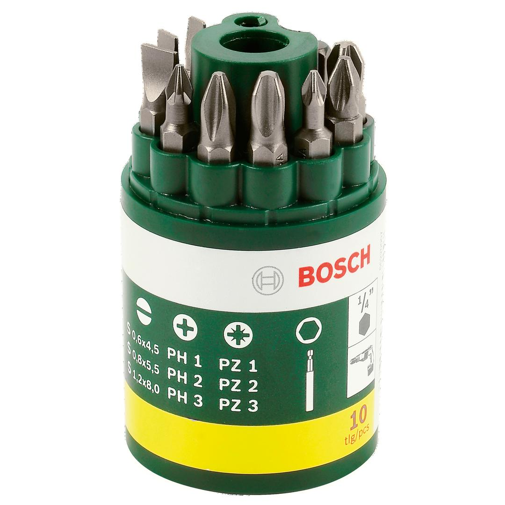
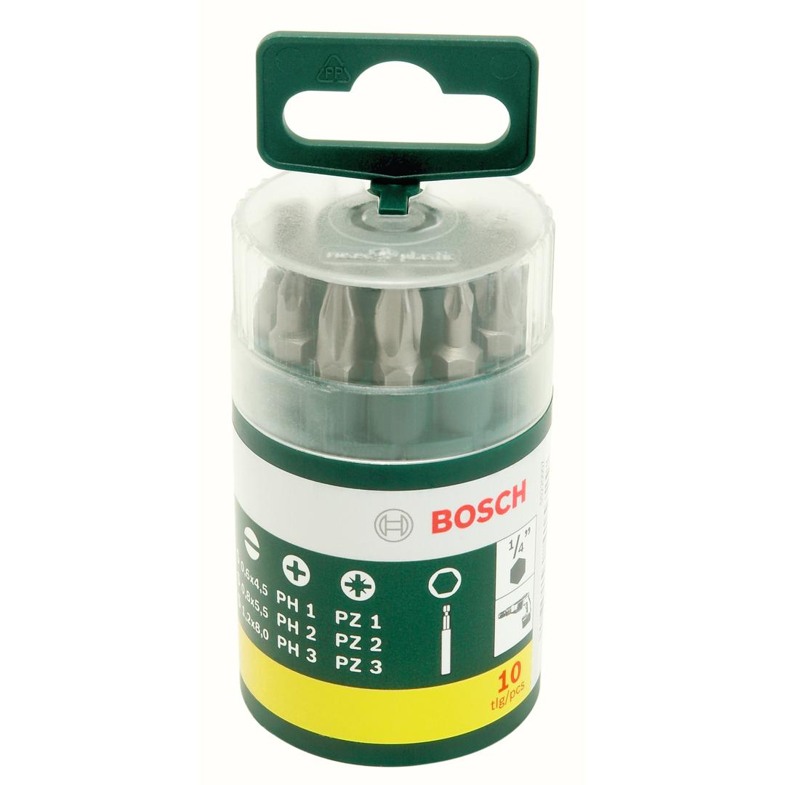

2607019454


| Contents |
9 screwdriver bits L = 25 mm
PH 1/2/3
PZ 1/2/3
S 4.5/5.5/8
1 universal holder, magnetic |
| Packaging |
Plastic box with sticker with Euro hole |
| Dimensions (lxwxh) |
115 x 47 x 47 mm |
| Weight |
0.1 kg |
| Pack quantity |
10 Pcs |
| Minimum order quantity |
1 Pcs |
DIY with Bosch quality: Screwdriving made easy.